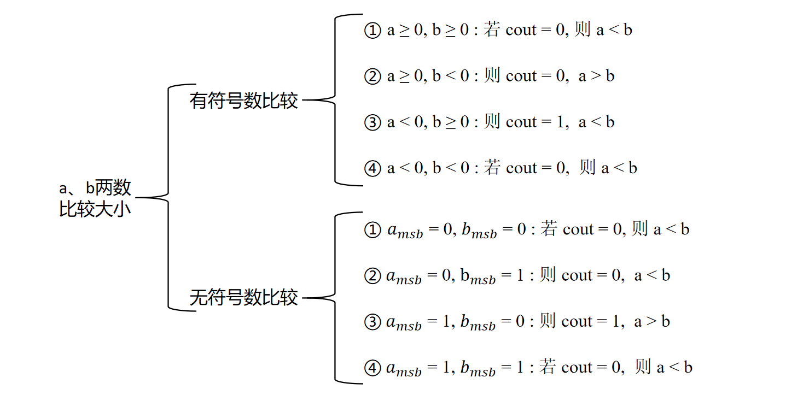
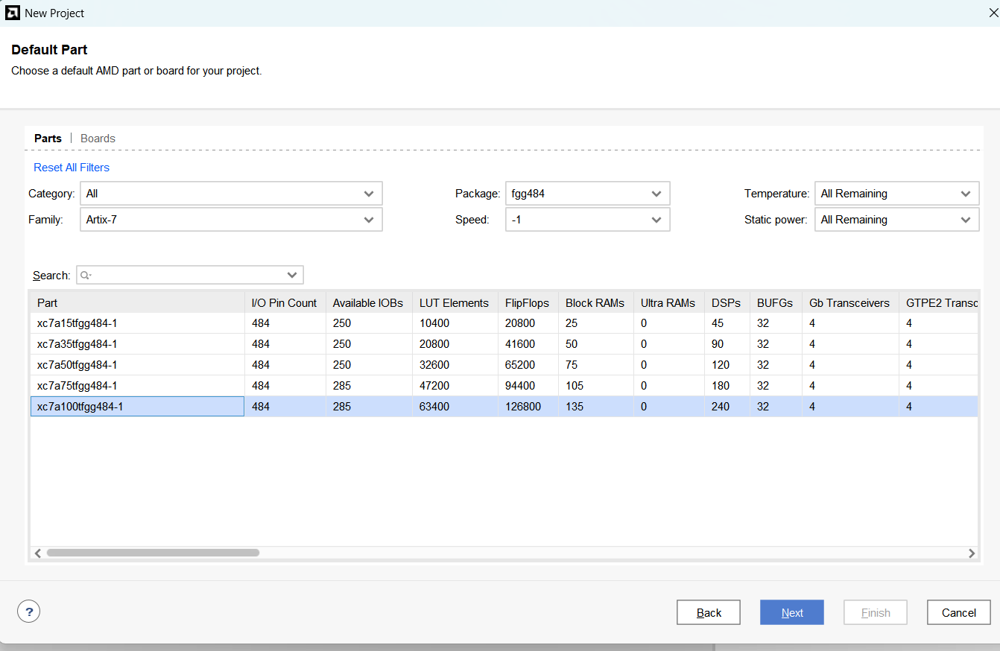

ALU 设计
在先修课程《数字逻辑》中，我们学习了一些常见的运算部件，如加减法器、移位器、乘法器等， 这些运算部件用于实现基础运算指令。本次实验我们会将这些运算部件组成 ALU (Arithmetic & Logic Unit) 单元， 让它可以支持多种运算。 本次实验不需要进行FPGA开发板验证, 只需要在Vivado中进行仿真验证, 为后续的简单处理器设计打下基础。
1 ALU 的运算类型
ALU 是 CPU 数据通路中最基础、最关键的模块之一。 它将两个或多个输入操作数进行指定的运算，如逻辑运算、移位、加减法等，最终将运算的结果输出。
本次实验我们实现 RV32I 中涉及的大部分算术逻辑运算功能。
1.1 与、或、异或
“与”、“或”、“异或”三种运算模块, 对应于 RV32I 中的 and、 or、 xor 指令实现。
常见的逻辑运算有“与”、“或”、“非”、“异或”、“同或”，而 RV32I 中只用“与”、“或”、“异或”三种即可完成常见的逻辑运算。 回忆一下: 一个 1-bit 数的“非”可以通过将其与“1”异或来实现。
推荐将每种运算都实现为一个独立的模块。代码的模块化有利于构建清晰的电路结构（模块加连线）， 并且在调试时可以快速定位到对应模块中的信号，而无需在一个复杂的模块中、从大量的信号中寻找需要观察的信号。如下代码给出了加法运算模块的示例，其他逻辑运算模块的实现方式类似。
1 module and32(a, b, out);
2
3 input a, b;
4 output out;
5 wire [31:0] a, b, out;
6
7 assign out = a & b;
8
9 endmodule
1.2 移位
“左移”、“逻辑右移”、“算数右移”三种运算, 对应于 RV32I 中的 sll 、 srl 、 sra 的指令实现。
回忆上学期已经练习过的桶形移位器模块，能够单周期实现任意位的左移、逻辑右移和算数右移。 需要的三个输入为：待移位的数据 val, 移位量 shamt (5 bits), 移位的类型 op。
1.3 加减法
加减法模块实现了 add 、 sub 指令运算。
数的表示与加减法
在加减法运算中, 有时会出现错误的结果, 例如: 进行8 bit 加减法时, 补码表示的有符号数范围是 -128~127, 当有符号数 127 和 1 相加时, 得到的结果是 -128, 这显然是异常的结果。
请分别讨论有符号数运算和无符号数运算中，哪些情况会导致运算的结果不正确。
这是必做的思考题，需要完成在实验报告中。
在 RISC-V 中的加减法并不会根据进位情况对加减法异常进行额外的处理。 若要避免异常，可以在执行加减法前进行比较。
1.4 比较置位
比较置位操作实现了 slt 、 sltu 指令运算。
slt
用法： slt rd, rs1, rs2
含义： rd = ( (signed)rs1 < (signed)rs2 ) ? 1 : 0 , 即将 rs1 和 rs2 当作有符号数，并进行比较，如果 rs1 < rs2, 则 rd = 1，否则 rd = 0
sltu
将操作数作为无符号数并进行比较，其他与 slt 相同
比较大小操作是通过减法来实现的, 但不同的是: RISC-V中的加减法不区分操作数是有符号数还是无符号数 (一律按有符号数进行计算), 但是“比较大小”的操作却需要区分清楚。 因此我们需要对减法的结果进行分类讨论，如下图所示，其中 msb 为操作数的最高位。

- 根据上图的逻辑, 可以对 lt (less than) 标志位进行求值, 输入为以下三个信息：
操作数为有符号数还是无符号数
操作数的最高位的值
进位输出cout
建议在比较置位模块中实例化加减法器模块来实现功能。如果在加减法器模块中求得 lt 的值，则比较置位模块的实现就非常简单：对加减法器的输出 lt 进行判断, 若 a 小于 b 则输出1, 否则输出0。
2 ALU 实现
2.1 ALU 代码框架
ALU 的代码框架已经搭好，请获取本次实验的源码 git clone https://github.com/yuweijie-20030124/suat-compution_organization.git
代码中有两个文件夹， core 以及 sim。 其中 core 描述了一个删减版的 cpu 核，提供了指令译码、写回等功能; sim 是提供的仿真环境和测试样例。
core 中包含了各个运算模块的 .v 文件，有一些模块已经给出了完整代码，但仍有**3个模块需要你来补充完整** ： alu_add.v 、 alu_slt.v 、 SUAT_alu.v 。 这三个模块的端口信号已经给出，不能随意修改。
2.2 加减法、比较置位模块
加减法模块 (alu_add.v) 需要计算加法和减法，还要对有符号数和无符号数进行小于判断, 输出 lt (less than) 信号 。
比较置位模块功能较为简单，当 lt 信号为 1，则输出 32'b1，否则输出 32'b0 。
2.3 ALU 总模块实现
ALU 需要将特定的控制信号输入到模块内部，并根据操作码，选择其中一个结果进行输出，因此需要一个多路选择器用以选择信号。
在本实验中, 我们已经基于risc-v指令规定了操作码对应的 ALU 操作, 请统一使用如下所示的编码方式 (否则你需要修改 testbench 和框架代码)。 当然这并非是最优秀的方式，在后续的 CPU 实验中，随着我们提供的仿真组件越来越少，你可以尝试更好的方式。
编码方式如下：
op[1:0] : 给桶形移位器指示移位的类型，00表示左移，01表示逻辑右移，11表示算数右移
op[2] : 若为1，则 ALU 输出桶形移位器的结果
op[3] : 若为1，则 ALU 输出加法器的结果
op[4] : 指示 is_unsigned 信号，1表示为无符号数，0表示为有符号数
op[5] : 指示 is_sub 信号，1表示做减法，0表示做加法
op[6] : 若为1，则 ALU 输出相与的结果
op[7] : 若为1，则 ALU 输出相或的结果
op[8] : 若为1，则 ALU 输出相异或的结果
op[9] : 若为1，则 ALU 输出比较置位的结果
在译码单元中，我们保证了这些控制 ALU 输出的信号为一位热码（独热码），可以简化 ALU 部分的译码复杂度。
2.4 Vivado 平台仿真测试
vivado 中硬件平台的选择与上学期相同，如下所示：

需在工程文件中添加 core 中的所有文件， 并且右键点击 define.v 将此文件 Set Global Include ; 在仿真文件中添加 sim 中的 testbench 。
仿真时，信息会在终端打印出来，实验要求测试通过所有测试样例。
ALU 模块实现与测试
完成三个待补充的模块，并用提供的仿真环境和测试样例进行测试，将打印的测试结果截图放在实验报告中。